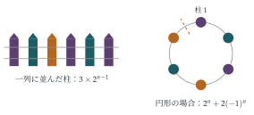

STEP II 1995、第2問
先に進む前に問題を読んでおこう。問題は STEP Support Programme の問題データベースにある： step.maths.org/questions/95-s2-q2
導入
一列に並んだ柱を塗るのは簡単である。最初の柱は \(3\) 通り、残りの柱はそれぞれ \(2\) 通り（直前の柱の色以外なら何でもよい）であるから、\(3 \times 2^{n-1}\) 通りとなる。ところが、この列を曲げて円にすると、意外なほど扱いにくくなる。最後の柱は隣の柱だけでなく最初の柱とも異なる色でなければならず、それによって使えない色が \(1\) つ減るのか、まったく減らないのかは、それまでの塗り方すべてに依存するからである。
この問題では、古典的な工夫によってこの困難を回避する。最後の柱の色によって数え上げを場合分けし、それぞれの場合が互いにどう結びつくかを調べるのである。答えの \(2^n + 2(-1)^n\) は彩色多項式（chromatic polynomial）の最初の例であり、四色定理（four colour theorem）の背後にある数学の一部をなしている。
取りかかる前に
円形に並んだ \(3\) 本の柱、\(4\) 本の柱の塗り方をそれぞれ数えよ。\(3 \times 2^{n-1}\) は数えすぎになっているか。なっているとすれば、どれだけ多いか。
円形に並んだ \(3\) 本の柱は互いにすべて隣り合っているので、\(3\) つとも異なる色でなければならない。よって \(3! = 6\) 通りである。円形に並んだ \(4\) 本の柱では \(18\) 通りである（最後に確かめられる）。一列の場合の \(3 \times 2^2 = 12\) と \(3 \times 2^3 = 24\) と比べると、円形の場合には、最後の柱が最初の柱と同じ色になる塗り方が除かれていることがわかる。
順を追って解く
段階 1 2 種類の塗り方
\(n + 1\) 本の柱の塗り方で、最初と最後の柱が赤であるものを考える。最後の柱を取り除く。残った最初の \(n\) 本の柱の塗り方について、何がいえるか。
柱 \(n\) は赤である柱 \(n + 1\) の隣にあるので、柱 \(n\) は赤ではない。柱 \(n + 1\) を取り除くと、最初が赤で最後が赤でない \(n\) 本の柱の塗り方、すなわち \(s_n\) 通りの塗り方のうちの \(1\) つが残る。逆に、\(s_n\) 通りの塗り方のどれも、柱 \(n + 1\) を赤に塗ることで、ちょうど \(1\) 通りに延長できる。したがって、この \(2\) つの集合はちょうど \(1\) 対 \(1\) に対応し、\(r_{n+1} = s_n\) である。
\(r_n + s_n\) は何か。
最初の柱が赤である塗り方は、最後の柱が赤であるか赤でないかのどちらかであるから、\(r_n + s_n\) は最初が赤である \(n\) 本の柱の塗り方すべての個数である。最初の柱より後の柱はそれぞれ \(2\) 通りの選び方があるので、\(r_n + s_n = 2^{n-1}\) となる。よって \[r_{n+1} + r_n = s_n + r_n = 2^{n-1}. \qed\]
段階 2 数学的帰納法による公式の証明
\(n = 1\) のとき柱は \(1\) 本で赤に塗られるので \(r_1 = 1\) であり、公式は \(\frac13(1 + 2) = 1\) を与える。\(r_n\) について公式が成り立つと仮定する。このとき \[r_{n+1} = 2^{n-1} - r_n = 2^{n-1} - \frac{2^{n-1} + 2(-1)^{n-1}}{3} = \frac{2 \cdot 2^{n-1} - 2(-1)^{n-1}}{3} = \frac{2^n + 2(-1)^n}{3},\] となり、これは \(r_{n+1}\) に対する公式である。■
この公式はどこから来たのか。漸化式（recurrence）\(r_{n+1} + r_n = 2^{n-1}\) は微分方程式に似ている。すなわち、「特殊解」（particular solution）\(c \cdot 2^n\) に、\(r_{n+1} + r_n = 0\) を満たす「余関数」（complementary function）\(A(-1)^n\) を加えたものである。\(c\) と \(A\) を求めよ。
段階 3 円形の場合
\(n\) 本の柱が円形に並んでいるとき、柱 \(1\) の色を固定し、たとえば赤とする。ここで柱 \(n\) と柱 \(1\) の間で円を切り、まっすぐ一列に伸ばす。一列の塗り方のうち、円形の正しい塗り方に対応するのはどれか。
まっすぐに伸ばすと、円は赤から始まる \(n\) 本の柱の列になり、最後の柱は柱 \(1\) とも異なる色でなければならない。つまり最後の柱は赤ではない。これらはちょうど \(s_n\) 通りの塗り方である。柱 \(1\) は \(3\) 色のどれでもよいので、円形の塗り方の総数は \[3s_n = 3(2^{n-1} - r_n) = 3 \cdot 2^{n-1} - 2^{n-1} - 2(-1)^{n-1} = 2^n + 2(-1)^n. \qed\] 確認：\(n = 3\) のとき \(8 - 2 = 6\)、\(n = 4\) のとき \(16 + 2 = 18\) となる。

振り返り
互いに結びつく場合に分ける。最後の柱が赤かどうかを記録することで、\(2\) つの数列 \(r_n\) と \(s_n\) が得られ、それらは簡単な漸化式で結ばれていた。
全単射（bijection）。\(r_{n+1} = s_n\) は計算によってではなく、塗り方を \(1\) 対 \(1\) に対応させることで証明した。
円を切る。循環的な問題が、両端に条件のついた一列の問題になった。
背後にある数学
彩色多項式
柱とその隣接関係はグラフ（graph）をなす。一列の場合は道（path）、円形の場合は閉路（cycle）である。正しい彩色（proper colouring）とは、隣り合う頂点に異なる色を塗る塗り方である。\(k\) 色による正しい彩色の個数は \(k\) の多項式であり、これをそのグラフの彩色多項式という。これは 1912 年にバーコフ（George Birkhoff）によって導入された。問題の議論を \(k\) 色で繰り返すと \[\text{道：} k(k - 1)^{n-1}, \qquad \text{閉路：} (k - 1)^n + (-1)^n(k - 1).\] が得られる。\(k = 3\) のとき、閉路の公式は \(2^n + 2(-1)^n\) となる。バーコフは、あらゆる地図のグラフの彩色多項式が \(k = 4\) で正であることを示すことによって、四色定理（どんな地図も、隣り合う国が異なる色になるように \(4\) 色で塗り分けられる）を証明しようとした。この方法は結局成功しなかった。四色定理は 1976 年に Kenneth Appel と Wolfgang Haken によって、計算機を大規模に援用して最終的に証明された。彩色多項式は今なお活発な研究分野であり、統計物理学と意外なつながりをもっている。統計物理学では、彩色多項式は磁性のポッツ模型（Potts model）として現れるのである。
行列による同じ数え上げ
第 7 章の線形代数を用いて、答えを別の見方で捉えることもできる。対角成分が \(0\) でそれ以外の成分が \(1\) である \(3 \times 3\) 行列を \(\mathbf{M}\) とする。すなわち、\((i, j)\) 成分は、色 \(i\) の次に色 \(j\) が来てよいとき \(1\) である。すると、\(\mathbf{M}^{n-1}\) の \((i, j)\) 成分は、色 \(i\) で始まり色 \(j\) で終わる一列の塗り方の個数を表すので、\(r_n\) は \(\mathbf{M}^{n-1}\) の対角成分の \(1\) つである。円形の塗り方は、\(n\) ステップ後に出発点に戻る列であるから、円形の塗り方の個数は \(\mathbf{M}^n\) のトレース（trace）である。\(\mathbf{J}\) をすべての成分が \(1\) である行列として \(\mathbf{M} = \mathbf{J} - \mathbf{I}\) であるから、\(\mathbf{M}\) の固有値（eigenvalue）は \(3 - 1 = 2\)（固有ベクトル（eigenvector）\((1, 1, 1)\)）と \(-1\)（重複度 \(2\)）であり、\(\mathbf{M}^n\) のトレースは固有値の \(n\) 乗の和である： \[\operatorname{tr}\mathbf{M}^n = 2^n + (-1)^n + (-1)^n = 2^n + 2(-1)^n.\] この転送行列（transfer matrix）法は、\(1\) ステップずつ組み立てられる配置を数えるために、組合せ論や統計物理学の至るところで用いられている。
思考のスキル
\(1\) つの数列だけでは簡単な漸化式を満たさないとき、少しだけ余分な情報（ここでは最後の柱の色）を記録し、場合どうしを結ぶ漸化式を求めよ。
これが状態（state）という考え方である。先へ進むために知る必要のあることだけを正確に記録し、それ以外は記録しない。これは計算機科学における動的計画法（dynamic programming）、確率論におけるマルコフ連鎖（Markov chain）（第 12.16 節）、そして転送行列法の基礎となっている。
次の一歩
\(k\) 色の場合。この問題を \(k\) 色で考え直せ。\(r_{n+1} = s_n\) が依然として成り立ち、\(r_{n+1} + r_n = (k-1)^{n-1}\) となることを示し、\(r_n\) を求め、閉路の彩色多項式 \((k - 1)^n + (-1)^n(k - 1)\) を導け。
赤が \(2\) つ続かない。一列に並んだ \(n\) 本の柱を赤または白に塗るとき、隣り合う \(2\) 本の柱がともに赤にならない塗り方は何通りあるか。（フィボナッチ（Fibonacci）数が現れるはずである。）
車輪。円形に並んだすべての柱に隣接する中心の柱を加える（これを「車輪」という）。これを \(4\) 色で塗る方法は何通りあるか。（ヒント：中心は \(1\) 色を使い、円は残りの \(3\) 色を使わなければならない。）
ネックレス。円形の \(2\) つの塗り方について、一方が他方を回転したものであるとき同じものとみなすことにすると、\(n = 4\) のとき異なる塗り方は何通りあるか。\(n = 5\) のときはどうか。（これがバーンサイド（Burnside）の補題の出発点である。）
さらに学ぶために
Robin Wilson, Introduction to Graph Theory（Pearson）。『グラフ理論入門』。定番の入門書であり、彩色と四色問題を扱っている。
Robin Wilson, Four Colours Suffice（Penguin）。『四色で十分』。一般読者向けの、四色定理の物語。
Herbert Wilf, generatingfunctionology（オンラインで無料公開）。『母関数学』。漸化式とその解き方を、転送行列法も含めて解説している。